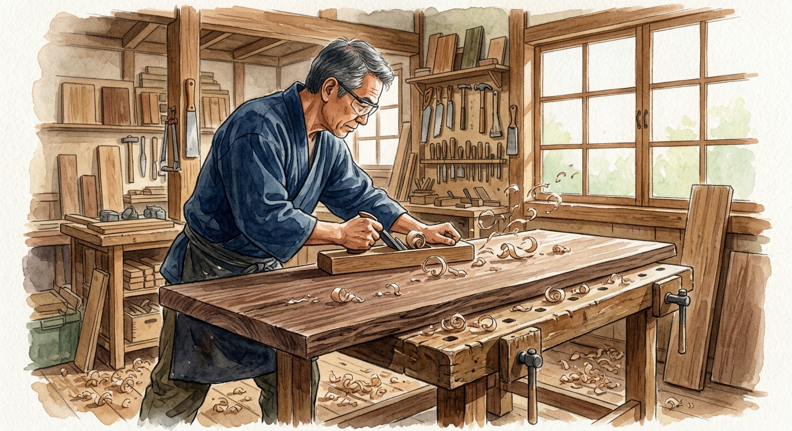
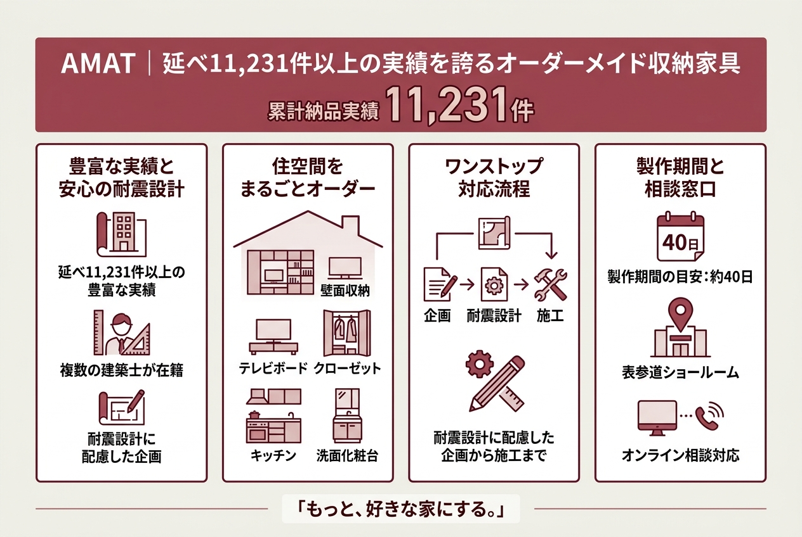
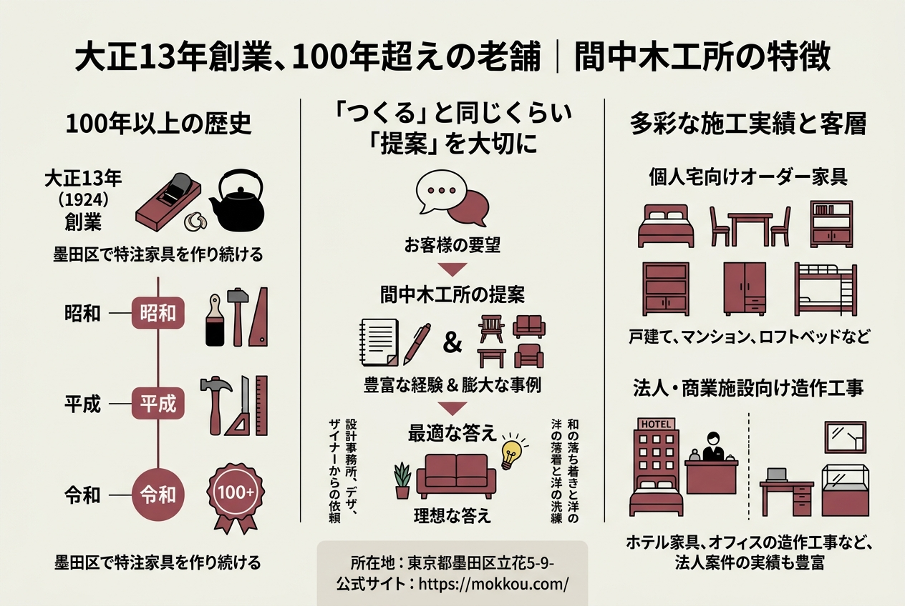
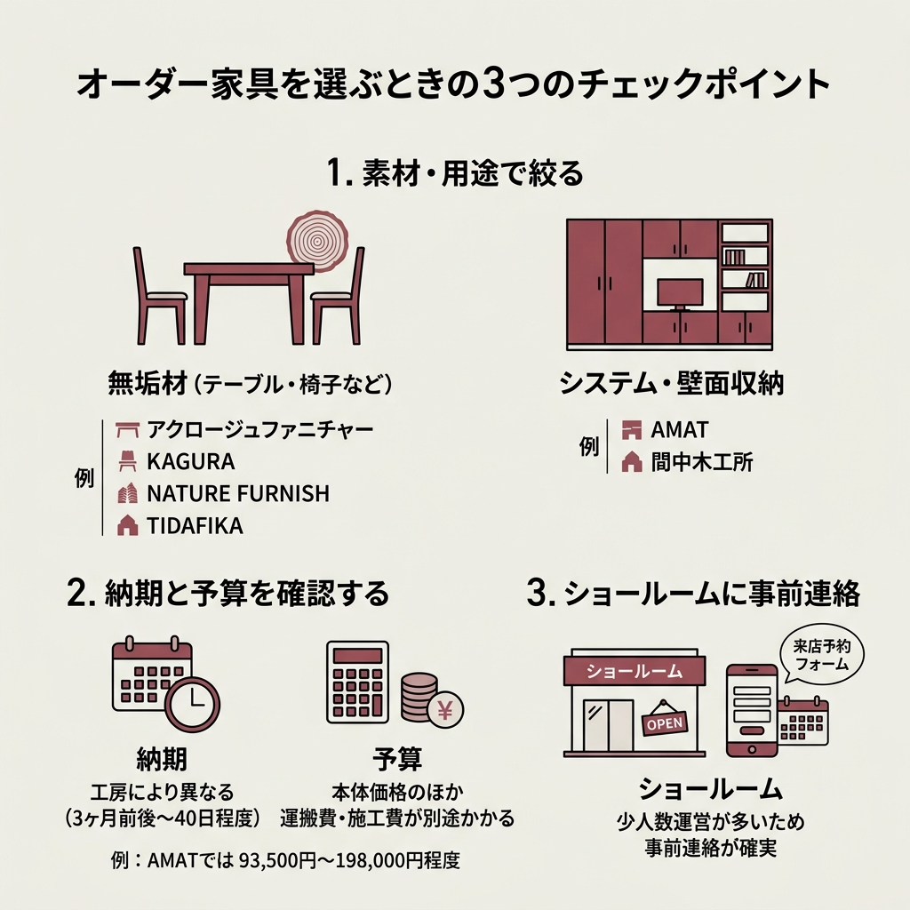

東京のオーダー家具工房おすすめ8選｜無垢材から収納家具まで徹底比較

「既製品だとサイズが微妙に合わない」「部屋の雰囲気にぴったりの家具がほしい」――そんなときに頼りになるのが、オーダー家具の工房です。
東京には、無垢材にこだわる小さな工房から、システム収納を得意とする大規模メーカーまで、さまざまなタイプのオーダー家具店がそろっています。
この記事では、実際に公式サイトの情報を調べ上げて厳選した東京のオーダー家具工房8選を紹介します。
得意分野や価格帯、所在地をまとめた比較表も用意したので、まずはそこからチェックしてみてください。
オーダー家具って高そう…。相場はどれくらいなの？
工房によって幅がありますが、たとえばAMATのフロートTVボードは247,500円〜。素材やサイズで大きく変わるので、まず比較表で全体像をつかむのがおすすめです。
東京のオーダー家具工房8選 比較一覧表
まずは結論から。今回調べた8つの工房を一覧で比較します。
| 工房名 | 得意分野 | 所在地 |
|---|---|---|
| アクロージュファニチャー | 無垢材テーブル・椅子・オーディオ | 新宿区 神楽坂 |
| AMAT | オーダーメイド収納・壁面収納 | 渋谷区 神宮前 |
| NATURE FURNISH | 無垢材・アイアンのオーダー家具全般 | 武蔵野市 吉祥寺 |
| KAGURA（家具蔵） | 無垢材チェア・テーブル・キッチン | 東京・横浜に複数店舗 |
| 間中木工所 | 特注家具・造作工事 | 墨田区 立花 |
| Sense Of Fun STORE | デザイン家具・デジタル木材加工 | 東久留米市 |
| TIDAFIKA（ティダフィカ） | 無垢材テーブル | 日野市 |
| WOODWORK | オーダー家具・無垢天板 | 東京 |
アクロージュファニチャー｜一級家具製作技能士が手がける無垢材工房
 出典: www.acroge-furniture.com
出典: www.acroge-furniture.com神楽坂の路地を歩いていくと出会える、小さな家具工房。
アクロージュファニチャーは、一級家具製作技能士の国家資格を持つ職人が直接オーダーを受けて製作している工房です。
「ACROGE」はACROSS GENERATIONの略語で、「世代を超えて受け継がれる家具づくり」がコンセプト。
ブラックウォールナット、チェリー、楢（ナラ）といった無垢材を使い、テーブル・椅子からオーディオ家具、一枚板まで幅広く対応しています。
こだわりと強み

公式サイトで掲げている4つのこだわりがこちら。
- 多種多様な製作と樹種の加工経験からくる高い応用力
- デザイン力と厳選した素材・質感からくる総合力
- 年間生産数を限定し、良材・適材を確保できた分だけ製作
- お客様の期待や想像を超すものを必ず納める
納品実績を見ると、個人宅のダイニングセットから星野リゾートの温泉お絵描きセット、音楽之友社のオーディオスピーカーまで、ジャンルの幅がかなり広いです。
工房主の岸邦明さんは28歳で木工の道を志し、約20カ国をキャンピングカーで巡って感性を磨いたという経歴の持ち主。
一級家具製作技能士の資格を持つ職人は全体の1%にも満たないとのこと。技術面の信頼度は高いといえます。
木工教室も開催しているので、オーダー前に素材の質感を体験してみるのもいいかもしれません。
アクセス・基本情報
〒162-0818 東京都新宿区築地町6番地 北星ビル2階
東西線 神楽坂駅から徒歩4分、有楽町線 江戸川橋駅から徒歩5分。
営業時間は9:00〜18:00（年末年始除く）。不定休のため、事前に連絡してから訪問するのが確実です。
電話: 03-6265-0241
公式サイト: https://www.acroge-furniture.com/

AMAT｜延べ11,231件以上の実績を誇るオーダーメイド収納家具
「もっと、好きな家にする。」
AMATのキャッチコピーを見て、まさにそうだよなと思いました。
AMATは2004年の事業開始から首都圏で延べ11,231件以上のオーダーメイド収納家具を手がけてきた実績があります。
壁面収納、テレビボード、クローゼット、キッチン、洗面化粧台まで、住空間の収納をまるごとオーダーできるのが特徴。
複数の建築士が在籍しており、耐震設計に配慮した企画から施工までワンストップで対応しています。
オーダー収納家具の参考価格
気になる価格帯をまとめました。
| アイテム | 参考価格（税込） | サイズ目安 |
|---|---|---|
| フロートTVボード | 247,500円〜872,300円 | W2,400×D400×H256 |
| フルサイズTVボード・壁面収納 | 935,000円〜1,287,000円 | W3,500×D400×H1,800 |
| 壁一面TVボード | 902,000円〜1,870,000円 | W4,450×D400×H2,150 |
| クローゼット | 605,000円〜1,606,000円 | W3,490×D1,375×H2,300 |
| オールインワンクローゼット | 759,000円〜1,848,000円 | W3,328×D595×H2,450 |
ショールーム・アクセス
実物を見てから決めたいなら、表参道のショールームへ。
〒150-0001 東京都渋谷区神宮前2-7-15 アンシャンテ1F
東京メトロ銀座線 外苑前駅3番出口から徒歩8分、千代田線 明治神宮前駅から徒歩約10分。
営業時間: 10:00〜19:00（定休日: 水曜日、祝日）
電話: 03-5413-3003
オンライン相談にも対応しているので、遠方の方でも気軽に相談できます。
公式サイト: https://www.amat.co.jp/
NATURE FURNISH｜吉祥寺で22年、2,000台超の実績
 出典: f-nabeshima.com
出典: f-nabeshima.com吉祥寺の中道通り沿いにある、知る人ぞ知るオーダー家具工房です。
NATURE FURNISHは創業から22年で2,000台を超える完全オーダーメイド家具を製作してきました。
無垢材だけでなくアイアンや真鍮も扱っていて、素材の組み合わせの幅が広いのが強み。
設計段階から何度も打ち合わせを重ねて、木材選びから納品・設置まで一貫して対応しています。
実際に頼んだ人の感想が知りたいな。
公式サイトに口コミが載っているので紹介しますね。
口コミ・お客様の声
注文から納品までの流れ
ショールームまたは電話で要望を伝える
注文請書を作成し、代金の一部を先払い。必要に応じて現地で採寸
ご注文からおおよそ3〜4ヶ月で完成
スタッフが直接納品。残金は納品後1週間以内に振込
納期に希望がある場合は半年前以上に相談すれば調整してもらえるとのこと。
〒180-0004 東京都武蔵野市吉祥寺本町4-14-2
吉祥寺駅から中道通りを三鷹方面に徒歩10分。
営業時間: 月・木 11:30〜17:00、金〜日・祝 11:00〜19:00（火・水定休）
電話: 0422-27-5051
公式サイト: https://f-nabeshima.com/
KAGURA（家具蔵）｜「一生もの」の無垢材家具
 出典: www.kagura.co.jp
出典: www.kagura.co.jp「一生ものの家具と、心豊かな暮らしを。」というメッセージに惹かれる方は多いのではないでしょうか。
KAGURAは東京・横浜に複数店舗を構え、世界中から厳選した銘木で無垢材家具を製作しています。
チェア、テーブル、ソファ、キッチン、収納など品揃えが幅広く、樹種から家具を選べるのが特徴です。
KAGURAの4つのこだわり
- CRAFTSMANSHIP ― 熟練の職人による「木組み」と「削り出し」の技術
- SOLID WOOD ― 愛すべき無垢材という素材への徹底したこだわり
- FINISHING ― 永く使うためにとことんこだわる仕上げ
- AFTERCARE ― 家具からはじまる家づくりを支えるアフターケア
ナラ、ウォールナット、チェリーといった銘木を使った納品事例も豊富に公開されています。
価格や具体的な店舗住所の詳細は公式サイトで確認してください。
公式サイト: https://www.kagura.co.jp/

間中木工所｜大正13年創業、100年超えの老舗
創業1924年（大正13年）。
間中木工所は、東京都墨田区で100年以上にわたって特注家具を作り続けている老舗です。
個人宅のオーダー家具だけでなく、ロッテシティホテル錦糸町の家具や、オフィスの造作工事など法人案件の実績も豊富。
施工事例
公式サイトには、三鷹市の戸建て住宅、中央区のロフトベッド、江東区のオフィス造作工事、品川区のオフィスエントランス工事など多彩な事例が掲載されています。
住宅だけでなく、ホテルの宴会テーブルやガラスショーケースまで手がけているのは、この規模の工房では珍しい対応力。
東京都墨田区立花5-9-
公式サイト: https://mokkou.com/
100年以上って、すごい歴史だね。どんな人が頼んでるの？
個人宅のオーダー家具はもちろん、設計事務所やデザイナーからの依頼、ホテル・オフィスの造作まで幅広いですよ。法人案件の比率が高いのは老舗ならではですね。
Sense Of Fun STORE｜家具屋と設計事務所が一体のデザインメーカー
 出典: sense-of-fun.com
出典: sense-of-fun.comちょっと変わったコンセプトの工房を1つ紹介させてください。
Sense Of Fun STOREは、家具屋と設計事務所が一体となった「デザインメーカー」。
日常にデザインと創造性を取り入れることで、暮らしをより豊かにすることを目指しています。
TBSドラマ「西園寺さんは家事をしない」の美術協力を手がけたり、世界三大デザイン賞で銀賞を受賞するなど、デザイン力には定評があります。
オリジナル製品とデジタル加工

「タナプラス」「Bed TO Sofa（ベッドとソファ）」「M Wagon」「西園寺テーブル」といったオリジナル製品をラインナップ。
さらに「Sense Of Fab」では、デジタル木材加工機「ShopBot」を導入。個人のクリエイティブなものづくりから企業の加工受託まで対応しています。
東京都東久留米市八幡町1-1-57
西武池袋線 清瀬駅より徒歩23分、東久留米駅より徒歩27分。駐車場1台分あり。
電話: 090-8641-0245
公式サイト: https://sense-of-fun.com/
TIDAFIKA（ティダフィカ）｜テーブル製作1,000台以上の実績
 出典: tidafika.com
出典: tidafika.com20年以上の木工歴を持つ職人が、2020年に独立して立ち上げた工房。
テーブル製作だけで1,000台以上の実績があり、無垢材テーブルの注文なら頼れる存在です。
販売後のアフターケアにも力を入れており、長く使い続けられる家具づくりを大切にしています。
百貨店での出展実績もあり、伊勢丹浦和や横浜高島屋にも出店した実績があります。
東京都日野市大字上田472-1
電話: 050-3390-8571
見積りは無料。サイズや樹種による価格は公式サイトでお問い合わせください。
公式サイト: https://tidafika.com/
WOODWORK｜無垢天板とオーダー家具の専門工房
テーブル、デスク、一枚板、椅子、ソファ、収納と幅広いラインナップを持つWOODWORK。
コンセプトプロダクト「F.」やオーダー家具「TANA」といった独自のシリーズを展開しています。
アップサイクル家具にも取り組んでおり、環境に配慮したものづくりをしているのも特徴です。
詳細は公式サイトで確認してください。
公式サイト: https://woodwork.co.jp

オーダー家具を選ぶときのチェックポイント

予算15万円！LOWYA商品7点でお部屋づくり #shorts
8つの工房を紹介してきましたが、「結局どこがいいの？」と迷ってしまうかもしれません。
そんなとき、以下の3つの軸で考えると整理しやすいです。
素材と仕上げで絞る
無垢材のテーブルや椅子がほしいなら、アクロージュファニチャー、KAGURA、NATURE FURNISH、TIDAFIKAあたりが候補になります。
一方、壁面収納やシステム収納を検討中なら、AMATや間中木工所が専門性の高さで有利です。
- 無垢材テーブル・椅子 → アクロージュファニチャー / KAGURA / NATURE FURNISH / TIDAFIKA
- システム収納・壁面収納 → AMAT / 間中木工所
- デザイン重視・デジタル加工 → Sense Of Fun STORE
- オーダー家具全般 → WOODWORK
納期と予算の確認
オーダー家具は注文から納品まで時間がかかります。
NATURE FURNISHでは約3〜4ヶ月、AMATの製作期間は約40日。工房によって大きく違うので、引っ越しやリフォームの予定がある方は早めの相談がおすすめです。
ショールームは予約なしで行っても大丈夫？
工房によりますが、アクロージュファニチャーは事前連絡を推奨、AMATは来店予約フォームがあります。少人数で運営している工房が多いので、事前に連絡しておくのが確実です。
よくある質問
東京のオーダー家具工房選び、ここがポイント
今回は東京でオーダー家具を注文できる8つの工房を紹介しました。
無垢材の質感にこだわるか、収納力を重視するか、デザイン性を求めるか。
自分が何を一番大切にしたいかで、ぴったりの工房は変わります。
「ほしい物があるのに見つからない」そんな時はぜひご相談ください！
アクロージュファニチャー公式サイトより
調べてみて感じたのは、どの工房も「お客様の想いをかたちにする」という姿勢が共通していること。
まずは気になる工房に問い合わせてみるのが、理想の家具への一番の近道です。